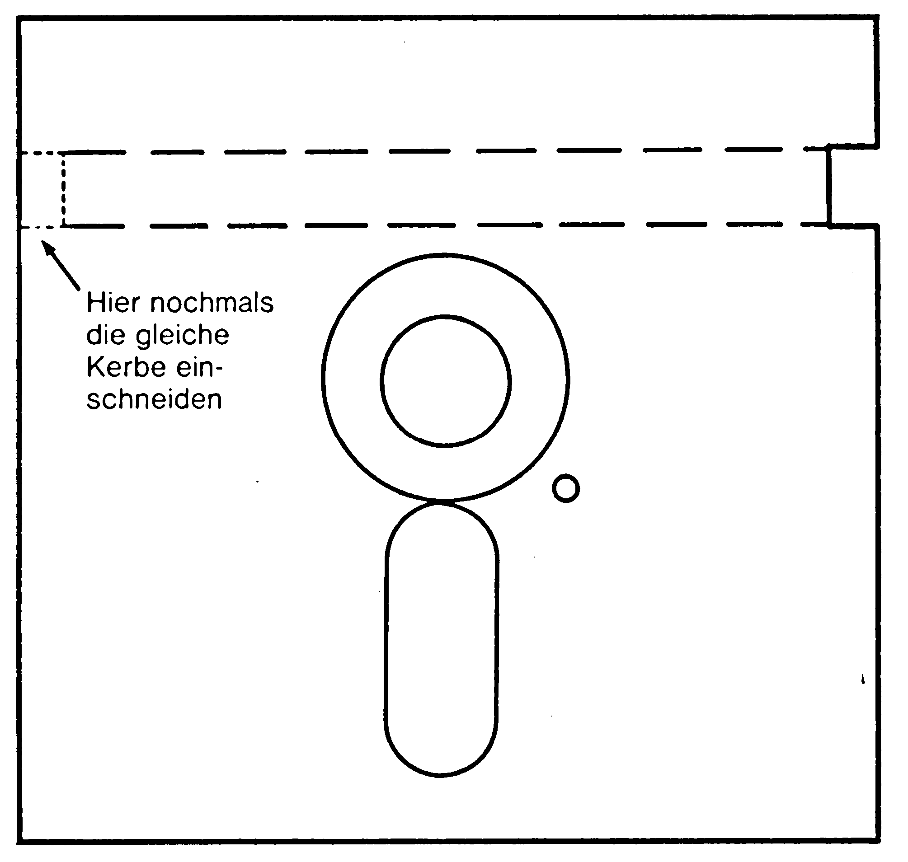
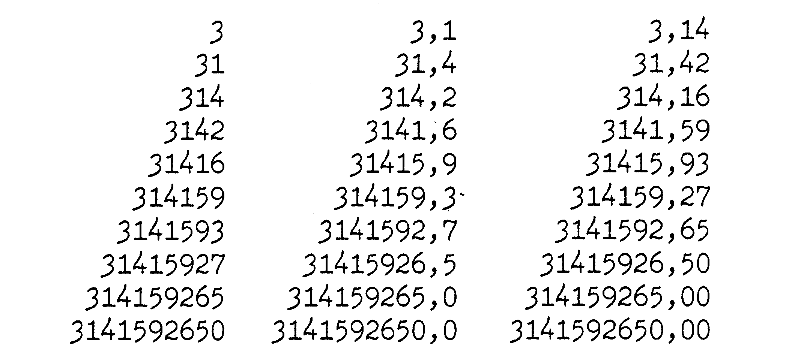
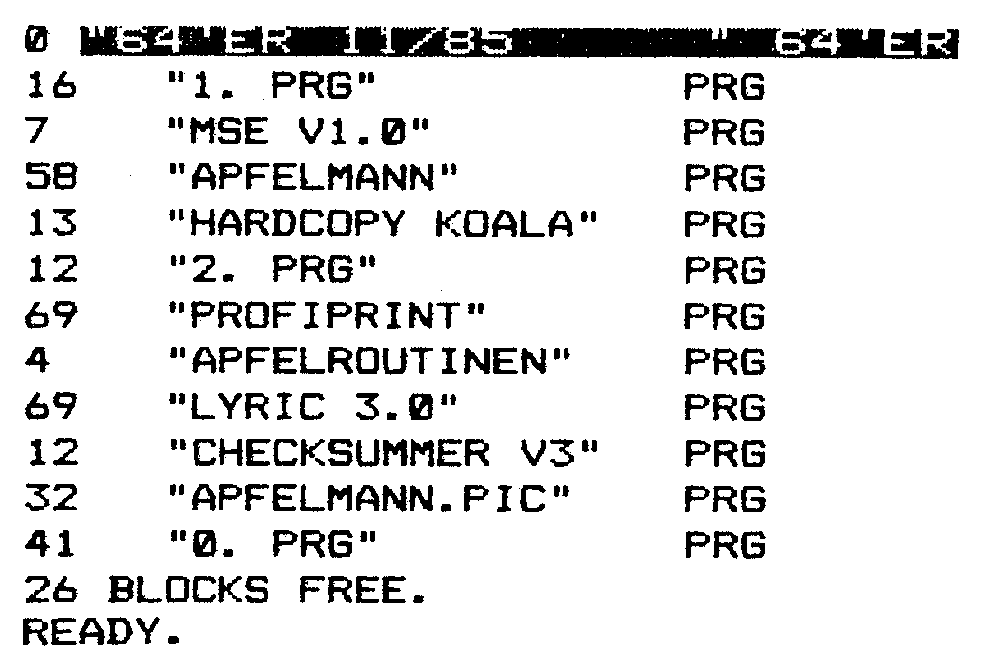
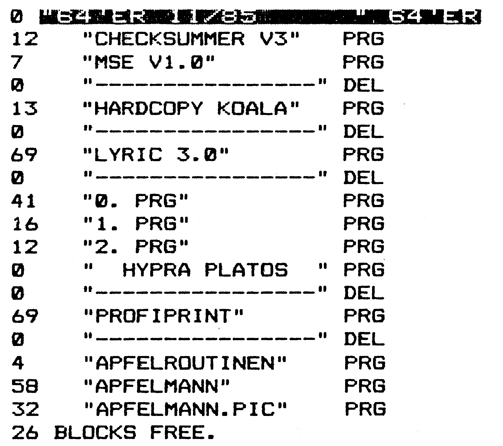

Tips und Tricks für Einsteiger
Es ist für einen Einsteiger anfangs immer schwer, aus seinem Computer die optimale Leistung herauszuholen. Die hier vorgestellten Routinen und Programme sollen Ihnen helfen, mit Ihrem Computer besser »auszukommen«.
Teilweiser Nachdruck aus 64'er 7/84, S. 110 (nur der Tip »Ein Centronics-Interface«), 64'er 10/84, S. 89 (nur der Tip »Listschutz für Basic-Programme«), 64'er 12/84, S. 84 (nur der Tip »Automatische Zeilennummernvorgabe«), 64'er 1/85, S. 90 (nur der Tip »Restore für Unterprogramme«), 64'er 4/85, S. 153 (nur der Einzeiler »Zugriffszeit der Floppy verkürzen«), 64'er 5/85, S. 77 (nur der Tip »Directory sortieren«), 64'er 6/85, S. 148 (nur der Tip »Neues INPUT«), 64'er Sonderheft 5/85, S. 26 (nur der Tip »Formatierte Zahlenausgabe«) und 64'er 3/86, S. 79 (nur die Abschnitte 1 bis 3 der »Zahlensystemwandlung«). Die übrigen Tips stammen nicht aus diesen Ausgaben.
Wir haben ein paar Leckerbissen für Sie herausgepickt: neben einem AUTO-Number, Listschutzmethoden und einem besseren INPUT-Befehl finden Sie unter anderem auch noch einen OLD-Befehl und einen Peripherietest.
Hilfe nach NEW oder RESET
Es kann schon mal vorkommen, daß man NEW eingibt und danach erschrocken feststellt: es wurde vergessen, das Programm zu speichern. Normalerweise sind diese Daten dann verloren. Mit Hilfe des Programms »Unnew« (Listing 1) kann jedoch das alte Programm wieder gerettet werden. Dazu müssen Sie jedoch das Hilfsprogramm schon vor dem NEW auf einer Diskette (oder Kassette) parat haben. Geben Sie bitte Listing 1 ein und legen eine formatierte Diskette (oder Kassette) in Ihr Laufwerk. Nach anschließendem Start mit RUN wird daraus ein Maschinenprogramm erzeugt und selbständig auf Ihren Datenträger gespeichert.
Ist Ihnen nun ein Mißgeschick passiert (NEW eingegeben?), so legen Sie die Diskette mit dem Unnew-Programm ein, laden dieses mit
LOAD"UNNEW",8,1und starten es durch
SYS 525Ihr Basic-Programm wird damit gerettet, selbst wenn Sie einen Reset ausgelöst haben sollten.
(Daniel Kossmann/dm)Directory ohne Programmverlust
Gelegentlich möchte man das Directory einer Diskette ansehen, ohne ein eventuell im Speicher befindliches Programm zu zerstören. Befindet sich das DOS 5.1 (Erleichtert den Umgang mit der Floppy – zu finden auf Ihrer Test-/Demodiskette und im Artikel in diesem Heft) gerade nicht im Speicher, so behilft man sich meist mit der zeitaufwendigen Zwischenspeicherung des Programms auf Diskette. Es geht jedoch auch anders. Geben Sie einfach den folgenden Befehl im Direktmodus ein:
POKE44,PEEK(46)+1Damit wird der Basic-Anfang auf einen freien Speicherbereich gesetzt. Sie können jetzt wie gewohnt mit
LOAD"$",8das Directory laden und anschließend LISTen. Mit
POKE44,8gelangen Sie dann wieder zurück in das eigentliche Programm.
Eine zweite, komfortablere Methode ist, das folgende kleine Programm (Listing 2) in sein eigenes Programm einzubauen und je nach Bedarf dieses dann auszuführen (zum Beispiel als Unterroutine, die mittels GOSUB aufgerufen werden kann – dabei muß das END in Zeile 20 durch ein RETURN ersetzt werden).
(Heinzpeter Oelkers/dm)Mehr Diskettenkapazität
So können Sie die Kapazität Ihrer Diskette verdoppeln und Ihre Kosten halbieren: Sie müssen nur auf der anderen Seite noch mal genau die gleiche Schreibschutzöffnung einschneiden. Das geht am besten mit einem Papierlocher (siehe Bild 1).
(dm)
Listschutz für Basic-Programme
Ein Listschutz dient dazu, sein Programm und seinen Programmierstil vor fremden Augen zu schützen.
Möchte man ein Basic-Programm mit einem einfachen Listschutz versehen, so verfährt man folgendermaßen:
1. Man ergänzt die Zeile, ab der der Listschutz wirksam werden soll, mit »:REM" "«.
2. Man fährt mit dem Cursor auf das zweite Anführungszeichen und drückt fünfmal die Tastenkombination SHIFT-INST.
3. Nun wird ebenfalls fünfmal die Taste DEL gedrückt, so daß zwischen den Anführungszeichen fünf reverse T stehen.
4. Zuletzt bewegt man den Cursor hinter das zweite Anführungszeichen und drückt die Tastenkombination SHIFT und L. Anschließend RETURN nicht vergessen.
Versucht man nun, das Programm zu listen, gelangt der Computer nur bis zu der Zeile, in der der Listschutz steht und bricht den Vorgang dann mit der Meldung SYNTAX ERROR ab.
Dieser Listschutz ist allerdings relativ leicht wieder aufzuheben.
(Thomas Lopatic/dm)Ein geänderter Zeichensatz
Mit Hilfe dieses Programmes kann man auf ganz einfache Art einen neuen Zeichensatz (etwas dünner als der gewohnte) erstellen. Nach einer kleinen Wartezeit, in der dieser aufgebaut wird, können Sie über ein neues Schriftbild verfügen.
10 R=56334:POKE 53272,24:POKE R,0
20 POKE 1,51:FOR I=6 5 TO R/5
30 POKE I;PEEK(I+45056) AND 60
40 NEXT:POKE 1,7:POKE R,1Negative Bytes?
Die FRE-Funktion liefert beim C 64 gelegentlich negative Werte (negative Bytes?) Dies ist jedoch nur ein kleiner Fehler im Betriebssystem des Computers. Abhilfe schafft hierbei, zu der negativen Zahl den Wert 65535 zu addieren, also PRINT FRE(0)+65535.
(dm)Sequentielle Datei retten
Wenn auch nicht oft, so kann es doch gelegentlich einmal vorkommen, daß beim Schreiben einer sequentiellen Datei auf Diskette etwas passiert. Sei es, daß das Programm abstürzt oder durch einen Programmier- oder Bedienungsfehler die Datei nicht richtig geschlossen wurde. Durch geschickte Ausnutzung des COPY-Befehles läßt sich die Datei aber noch retten. Man muß nur im Direktmodus folgendes eingeben:
D$="NAME" (Name der verlorenen Datei)
OPEN1,8,15
PRINT#1,"C:X="+D$
PRINT#1,"S:"+D$
PRINT#1,"R:"+D$+"=X"
CLOSE1Kassettendirectory
Eine einfache, wenn auch sehr langwierige Methode, sich ein Kassettendirectory zu erstellen, ist folgende (ein Drucker wird vorausgesetzt): Geben Sie diese Direktbefehle über die Tastatur ein:
OPEN1,4:CMD1:LOAD"QAY"oder einen anderen, wirren Namen, der bestimmt nicht auf der Kassette zu finden ist. Nach dieser Eingabe muß die Space-Taste festgeklemmt (etwa mit einem Stück Tesafilm) und der Recorder gestartet werden. Dieser läßt die Kassette durchlaufen und gibt jedesmal, wenn er etwas findet, ein FOUND PROGRAMMNAME auf dem Drucker aus. Dieses Verfahren funktioniert auch mit Beschleunigern wie »Turbo Tape« oder »Super Tape«.
(dm)Restore für Unterprogramme
Wenn beide Programmteile, Hauptprogramm und Unterprogramm, DATAs enthalten, muß sichergestellt werden, daß auch die richtigen Werte gelesen werden. Wenn man nicht aufpaßt, kann es passieren, daß das Unterprogramm DATAs aus dem Hauptprogramm liest. Wie läßt sich das verhindern?
Es gibt eine umständliche Methode: Man kann eine kleine Basic-Erweiterung einbauen, den RESTORE X-Befehl. Es geht aber auch einfacher. Die Zeropage, das sind die ersten 256 Bytes des Speichers, hilft uns bei der Lösung des Problems. Genauer gesagt, die Adressen 65/66 und 122/123. Schlagen wir im Commodore-Handbuch nach, dann steht dort:
65 bis 66 Adresse des aktuellen DATA-Elementes
122 bis 123 Basic-Zeiger innerhalb der Subroutine
Mit diesen Informationen läßt sich schon etwas anfangen. Wenn das Unterprogramm angesprungen wird, dann sollte der Zeiger in Speicherstelle 122/123 auf die Adresse des Unterprogramms im Speicher stehen. POKEt man diese Werte in die Zeilen 65/66 mit
POKE 65,PEEK(122)
POKE 66,PEEK(123)so wird beim nächsten READ der Wert gelesen, der hinter dieser Basic-Zeile mit den POKEs steht, also das erste DATA-Element innerhalb des Unterprogrammes. Nach dem Rücksprung aus dem Unterprogramm muß der Zeiger eventuell auch im Hauptprogramm wieder gestellt werden.
In dem kurzen Demo-Listing (Listing 3) werden drei Unterprogramme in zufälliger Reihenfolge aufgerufen.
(Stephan Pätzold/dm)Fehler im Floppy-DOS
Wenn Sie schon einmal versucht haben, ein Programm mit der REPLACE-Funktion
(SAVE"@:NAME",8)zu speichern und das Programm dann zerstört war, so liegt es an einem Fehler im Floppy-Betriebssystem, der allerdings sehr selten auftritt. Abhilfe schafft hier nur die Methode, das alte Programm erst zu löschen und dann das Neue zu speichern.
(dm)Neues INPUT
Haben Sie schon einmal versucht, professionelle Programme zu schreiben? Dann hat Ihnen mit Sicherheit die INPUT-Routine des C 64-Betriebssystems zu schaffen gemacht, die sämtliche Zeichen zuläßt, auch solche, die zu völligem Unsinn oder Fehlermeldungen führen. Dieser Mißstand wird in Basic-Programmen meist mit einer GET-Schleife umgangen. Bei dieser Methode wird ständig ein Zeichen von der Tastatur geholt und auf Zulässigkeit überprüft. Die einzelnen Zeichen werden in einem String addiert. Wenn Sie mit INS oder DEL Korrekturen ausführen wollen, können Sie sich vorstellen, wie kompliziert und zeitraubend eine solche Routine werden kann.
Eine schnelle Lösung des Problems schafft dieses Maschinenprogramm (Listing 4), das einen neuen INPUT-Befehl generiert. Die Syntax des Befehls lautet:
INPUT>Eingabelänge, Spalte, Zeile, Variable
Wie Sie schon an der Syntax sehen, ein recht komfortabler INPUT-Befehl. Mit der Eingabelänge geben Sie an, wie lang das Eingabefeld höchstens sein darf. Durch Angabe von Zeile und Spalte können Sie das Eingabefeld direkt an jeder beliebigen Bildschirmstelle positionieren. Als Variable müssen Sie eine Stringvariable einsetzen, zum Beispiel A$. Sollen ausschließlich Zahlen eingegeben werden, braucht der String nur noch auf Buchstaben hin überprüft werden. Beispielsweise mit folgender Routine:
10 INPUT>4,1,1,A$
20 IF STR$(VAL(A$))=" "+A$ THEN PRINT"ES IST EINE ZAHL":END
30 PRINT"KEINE ZAHL":GOTO10Tips zur Eingabe
Das Programm (Listing 4) müssen Sie mit dem MSE eingeben und speichern. Den MSE finden Sie auf Seite 136 in dieser Ausgabe. Laden Sie dann die neue Routine mit
LOAD"E-ROUTINE 64",8,1 (für die Floppy)
oder
LOAD"E-ROUTINE 64",1,1 (für Datasette)
und geben Sie
NEW
und
SYS 49152
zur Initialisierung ein. Danach können Sie Ihre Basic-Programme eintippen und mit dem neuen INPUT-Befehl verwenden. Die Routine können Sie natürlich auch mit dem Basic-Programm nachladen und mit dem neuen INPUT-Befehl verwenden.
Zusammenfassung
— Die Routine wird mit
SYS 49152
aktiviert.
— Das Programm benötigt den Speicherbereich von Adresse 49152 bis 49617
— Die Syntax lautet:
INPUT>Eingabelänge, Zeile, Spalte, Stringvariable
— Die CLR-; HOME-; RUN-; STOP- und SHIFT-Taste ist bei der Eingabe gesperrt.
— Das Eingabefeld kann mit den Cursortasten nicht verlassen werden.
— INST/DEL wirkt nur innerhalb des Eingabefeldes.
— Leerzeichen am Ende der Eingabe werden nicht mit übernommen.
— Benötigen Sie Leerzeichen am Schluß, geben Sie einfach
POKE 49298,131
ein.
POKE 49298,94
schaltet wieder in den Normalzustand.
Ein Nachteil soll nicht verschwiegen werden: Fragetext kann nicht wie beim serienmäßigen INPUT-Befehl ausgegeben werden. Der Text muß mit PRINT gedruckt werden. Das bedeutet, Sie müssen erst den Text mittels PRINT ausgeben und dann quasi den INPUT »drüberlegen«.
Eine komfortablere Routine finden Sie neben anderen Befehlen in der Basic-Erweiterung »Datawork-Basic«, erschienen in der 64'er, Ausgabe 1/86.
(Thomas Graf/dm)Ein Centronics-Interface
Ein Interface wird benötigt, um die Datenübertragung von einem C 64 auf Nicht-Commodore-Drucker (zum Beispiel Epson FX-80/85) zu ermöglichen. Dazu muß das Interface die vom Computer gesendeten Zeichen und Befehle so wandeln, daß der andere Drucker sie versteht und ausführt. Dies kann auf teuere Weise mittels eines Hardware-Interfaces oder billiger über eine Schnittstelle in Form eines Programmes erfolgen (Hardware-Interface bedeutet: In den Drucker muß ein meist teures Modul eingebaut werden, das diese Aufgabe übernimmt – wie etwa das Görlitz-, Wiesemann- oder HDS-Interface).
Die hier vorgestellte Software-Schnittstelle (unter Software versteht man Programme) übertrifft mit ihren Leistungsmerkmalen viele käufliche Hardware-Schnittstellen. Nicht aber im Preis: Nur etwa 20 Mark kostet diese »Selbstbau«-Centronics-Schnittstelle
Es handelt sich hierbei um ein Maschinenspracheprogramm mit 726 Byte Länge, das den Adreßbereich $C900 bis $CBD1 (dezimal: 51456 bis 52182) belegt (Listing 5). Ein Vorteil des Programmes besteht in der Verträglichkeit mit DOS 5.1. Das bedeutet: Es können beide Programme auf einmal im Speicher des Computers liegen. Die Befehle beider Routinen können eingegeben werden, ohne daß man mit Fehlern rechnen muß.
Das Programm ist ohne Einschränkung für alle Epson-kompatiblen Drucker anwendbar, die über einen Bitmustermodus verfügen. Dieser Modus wird für die Ausgabe der Commodore-eigenen Grafikzeichen benötigt. Das Programm besteht aus mehreren Programmteilen, von denen die meisten Erweiterungen bestehender Ein-/Ausgaberoutinen des Betriebssystems sind und bei der Initialisierung in diese eingebunden werden. Dadurch können schon bestehende Basic-Befehle wie OPEN und PRINT # zum Drucken benutzt und Programme müssen nicht umgeschrieben werden. Zur Ansteuerung verschiedener Druckmodi wurden jedoch zusätzliche Gerätenummern definiert, deren Bedeutung in Tabelle 1 erklärt ist.
| GERÄTENUMMER 16 | = DIREKTMODUS | |
| GERÄTENUMMER 18,4 | = TEXTMODUS | |
| GERÄTENUMMER 19 | = GRAFIKMODUS | |
| GERÄTENUMMER 17 | = LISTMODUS | |
| SEK.-ADR. | MODUS | STEUERZEICHEN |
|---|---|---|
| 0 | NORMAL | NORMAL |
| 1 | KLEIN | NORMAL |
| 2 | NORMAL | ERKLÄRT |
| 3 | KLEIN | ERKLÄRT |
Gerätenummer 16 realisiert einen sogenannten Direktmodus, mit dem die internen Commodore-Zeichencodes ohne Wandlung an den Drucker gelangen. Der Direktmodus ist zur Ausgabe von Steuerzeichen oder bei der Verwendung des Druckers als Plotter zur Einzelnadelsteuerung beziehungsweise zur Ausgabe von Bitmustern geeignet. Der Textmodus (Groß- und Kleinschreibung) ist unter Gerätenummer 18 und, weil er wohl am häufigsten bei bereits bestehenden Programmen benutzt wird, unter Gerätenummer 4 ansprechbar. Die Gerätenummer 19 realisiert den Großschrift-/Grafikmodus, wie er beim C 64 gleich nach dem Einschalten voreingestellt ist. Der wichtige Modus zum Listen von Programmen wurde mit Gerätenummer 17 realisiert. Es läßt sich über die Sekundäradresse noch zwischen vier Fällen unterscheiden. Einmal kann gewählt werden, ob das Listing, wie vom Bildschirm her gewohnt, mit Großbuchstaben und Grafikzeichen oder im Textmodus mit großen und kleinen Buchstaben gedruckt wird. Zum anderen kann man wählen, ob die Steuerzeichen wie bei Bildschirmausgabe als inverse Zeichen oder durch Abkürzungen wie <CLR> (Bildschirm löschen) im Klartext gedruckt werden. Durch all diese Möglichkeiten kann der Anwender zum einen auf seinem Drucker Ausgaben erzeugen, wie man sie von Commodore-Druckern her gewohnt ist, zum anderen auch alle Möglichkeiten seines Druckers voll nutzen.
Das Programm (Listing 5) müssen Sie mit dem MSE eingeben und auf Diskette oder Kassette speichern. Vor dem Start sollten Sie das Verbindungskabel Userport-Centronics zusammenlöten. Dazu ist in Tabelle 2 ein Verbindungsplan angegeben. Das Kabel sollte für eine störungsfreie Funktion nicht länger als einen Meter sein und aus abgeschirmtem, mehradrigem Steuerkabel bestehen, das man in (fast) jedem Elektronik-Bastelgeschäft findet. Dort sind in der Regel ebenfalls der Centronics-Stecker und der Stecker für den Userport erhältlich.
| USER PORT - CENTRONICS | ||
|---|---|---|
| A | GND | 16 |
| B | FLAG - BUSY | 11 |
| C | D0 | 2 |
| D | D1 | 3 |
| E | D2 | 4 |
| F | D3 | 5 |
| H | D4 | 6 |
| J | D5 | 7 |
| K | D6 | 8 |
| L | D7 | 9 |
| M | PA2 - STROBE | 1 |
Initialisiert wird die ganze Treiberroutine mit
SYS 51456Hierbei wird die Routine in das Betriebssystem eingebunden. Jedoch Vorsicht: Nach einem Abbruch des Programms, zum Beispiel durch die Betätigung der Tasten RUN/STOP und RESTORE ausgelöst, muß die Routine erneut initialisiert werden.
Die einzelnen Druckmodi spricht man mit den üblichen Basic-Befehlen an. Geöffnet wird der Ausgabekanal mit:
OPEN log.Dateinummer, Geräteadr. [,Sekundäradr.]
Die eckigen Klammern kennzeichnen optionale Angaben. Nach Öffnen des Kanals zum Drucker kann dann mit PRINT # log.Dateinummer der Text ausgegeben werden. Ein Programm-Listing wird zum Beispiel erzeugt mit den Befehlen
OPEN 17,17,0:CMD17:LIST
PRINT#17:CLOSE17Der PRINT-Befehl vor dem CLOSE ist notwendig, damit der CMD-Modus aufgehoben wird.
Umstellen auf beliebige Drucker mit Centronics-Schnittstelle
Das Programm wurde für einen Epson-Drucker geschrieben. Unverändert ist es für jeden anderen Drucker mit Centronics-Schnittstelle verwendbar, sofern auf die Ausgabe von Commodore-eigenen Grafikzeichen verzichtet wird (dazu gehören auch die reversen Zeichen).
(H. Eyssele/dm)Automatische Zeilennummernvorgabe
Das lästige Eingeben der Zeilennummern beim Programmieren kann Ihnen dieses kleine Programm abnehmen. Die Syntax des AUTO-Befehls lautet:
←A Anfangszeilennummer, SchrittweiteNach Eingabe dieses Befehls wird die Zeilennummer vorgegeben und nach RETURN um »Schrittweite« erhöht. Um aus dem AUTO-Modus wieder herauszukommen, muß man nach Vorgabe einer Zeilennummer das Zeichen »←« und RETURN eingeben.
Falls man nach Vorgabe einer Zeilennummer die RETURN-Taste betätigt, wird die entsprechende Zeile, falls vorhanden, gelöscht. Hiermit lassen sich auch sehr schnell Programmblöcke löschen, falls man die RETURN-Taste gedrückt hält, da die Zeilenvorgabe weiterläuft und die entsprechenden Zeilennummern gelöscht werden.
Das Programm (Listing 6) geben Sie bitte mit dem MSE ein und speichern es auf Ihren Datenträger. Sie starten das Programm mit
SYS 49152Angeschlossene Geräte eingeschaltet?
Dieses kleine Unterprogramm (Listing 7) dient dazu, ein Peripheriegerät (Drucker, Floppy) zuerst darauf zu testen, ob es überhaupt eingeschaltet ist. Dieses ist möglich durch Abfrage des Statusbytes. Enthält es einen anderen Wert als -128, so ist ein Fehler (DEVICE NOT PRESENT) aufgetreten. Bei nicht vorhandener Abfrage kann es schlimmstenfalls passieren, daß das Hauptprogramm abstürzt. Falls Sie diese Unterroutine in Ihr Programm einbauen wollen, so ersetzen Sie die jeweiligen PRINT-Anweisungen durch Rücksprünge in Ihr Hauptprogramm.
(dm)Zugriffszeit der Floppy verkürzen
Das vorliegende kleine Programm dient dazu, die Zugriffszeit der Floppy 1541 drastisch zu verkürzen. Der Schrittmotor, der den Schreib-Lesekopf bewegt, kann erfahrungsgemäß wesentlich schneller arbeiten, ohne daß eine sichere Funktion der Floppy gefährdet wird. Da der Schrittmotor im Interrupt bedient wird, genügt es, die Größe des Interruptintervalls zu verändern, um die Drehzahl des Motors zu beeinflussen. Standardmäßig wird etwa alle 15 Millisekunden ein Interrupt ausgelöst, der den Stepper um eine Viertelspur bewegt. Durch das vorliegende Programm wird diese Zeit auf etwa 4 Millisekunden verkürzt. Alle Bewegungen des Kopfes werden dadurch etwa viermal schneller. Das hat neben der Zeitersparnis noch zwei weitere wesentliche Vorteile: Das Laufgeräusch des Kopfes wird angenehm leise und kurz, und im Falle einer Kopfjustage (MG-salvenartiges Geräusch) fährt der Kopf mit erheblich verminderter Kraft gegen den Anschlag, so daß die Gefahr einer Dejustage deutlich vermindert wird.
10 OPEN 1,8,15,"M-W"+CHR$(7)+CHR$(28)+CHR$(1)+CHR$(15)Zahlensystemwandlung
Hier wollen wir einen leicht verständlichen Lösungsweg zur Umrechnung der beiden Zahlensysteme Dezimal und Hexadezimal erarbeiten.
Warum Hexadezimal?
Wir sind von Kind auf an das dezimale Zahlensystem gewöhnt. In der Computertechnik wird jedoch auch häufig das hexadezimale Zahlensystem verwendet. Warum? Um diese Frage zu beantworten, müssen wir etwas ausholen.
Wie Sie vielleicht wissen, kennt der Computer im Prinzip nur das binäre Zahlensystem, also die Kombination von 0 und 1. Aus diesen beiden Ziffern wird jede Zahl gebildet. Beispiel:
| binär 1101 | = dezimal 13 | = hexadezimal D |
| binär 1100000000000000 | = dezimal 49152 | = hexadezimal C000 |
In Fachzeitschriften finden Sie oft Abkürzungen oder andere Schreibweisen, um klarzustellen, welches Zahlensystem gemeint ist. Beispiel:
| binär | = bin | = % |
| hexadezimal | = hex | = $ |
| dezimal | = dez | = # |
Die Zeichen %, $ und # werden vor allem von Programmen benutzt, die irgendetwas mit Assembler (Maschinensprache) oder mit dem Betriebssystem des Computers zu tun haben, zum Beispiel Maschinensprache-Monitore. Wenn Sie mehr darüber wissen wollen, empfehle ich Ihnen das 64'er Sonderheft 8/85 (Assembler für Anfänger und Fortgeschrittene). Doch zurück zu den Zahlensystemen:
Die ersten Computer konnten nur mit binären Werten gefüttert werden, eine sehr anstrengende Sache für die Programmierer. Eine wesentliche Vereinfachung ergab das hexadezimale System. Jeweils 4 Binär-Ziffern konnten ersetzt werden durch eine einzige Hex-Ziffer. Beispiel:
| bin 1101 | = hex D | = dez 13 |
| bin 1000 | = hex 8 | = dez 8 |
Das liegt daran, daß das binäre Zahlensystem die Basis 2 besitzt, sich jede Zahl also in 2er-Potenzen darstellen läßt, während das hexadezimale System die Basis 16 hat. Da 2 hoch 4 den Wert 16 ergibt, können 4 Binär-Ziffern durch eine Hex-Ziffer ersetzt werden.
Unser C 64 und auch fast alle anderen Heimcomputer sind 8-Bit-Computer. Der C 64 kann 64 KByte Speicherplatz adressieren, das sind 2 hoch 16 = dezimal 65536 = hex FFFF. Sie sehen, überall taucht die 2 auf, beziehungsweise Potenzen von 2. Und das macht die Verwendung von hex-Zahlen so einfach, weil man sehr oft mit runden Hex-Zahlen zu tun hat. Beispiel: Als C 64-Besitzer werden Sie immer wieder mit der Speicherstelle 49152 zu tun haben. Mit SYS 49152 werden sehr viele Maschinenprogramme gestartet. Hexadezimal gesehen entspricht das der Zahl C000. Weitere Beispiele liefert die Speicheraufteilung des C 64:
| hex | dez | Inhalt |
|---|---|---|
| 100 | 256 | Ende der Zeropage |
| 400 | 1024 | Anfang Bildschirmspeicher |
| 800 | 2048 | Anfang Basic-Speicher |
| A000 | 40960 | 8 KByte Basic-ROM |
| C000 | 49152 | 4 KByte RAM |
| D000 | 53248 | 8 KByte Interpreter-ROM |
Sie sehen, daß viele wichtige Adressen »krumme« dezimale Zahlen ergeben, die sich in der Regel schlechter merken lassen. Leider kann man beim C 64 nicht auf das dezimale System verzichten. SYS-, POKE- und PEEK-Befehle lassen nur dezimale Parameter zu.
Beispiel: MSE
Ein Programm, mit dem Sie in jeder 64'er Zeitschrift und auch in diesem Sonderheft konfrontiert werden, ist der MSE. Mit dem MSE lassen sich Maschinenspracheprogramme sehr einfach, schnell und fehlerfrei abtippen. Tippen Sie ein MSE-Listing ab, haben Sie es mit Hex-Zahlen zu tun, und das aus zwei Gründen:
- Hex-Zahlen benötigen weniger Platz als Dezimal-Zahlen, nämlich anstatt mit drei Ziffern kommt man mit zwei Ziffern aus. Das bedeutet weniger Tipp-Arbeit.
- Wir können mehr Listing pro Seite unterbringen. Eine MSE-Zeile besteht aus der Adresse und einem Doppelpunkt (= 5 Ziffern), gefolgt von 8 Bytes plus einem Prüfbyte. Insgesamt ergibt das 23 Ziffern. Würde der MSE dezimale Zahlen verwenden, wären 33 Ziffern notwendig.
Beispiel: SMON
Selbst wenn Sie jetzt noch Anfänger sind, wird es nicht sehr lange dauern, bis Sie die ersten Schritte in Maschinensprache wagen. Spätestens dann werden Sie nicht mehr auf das hexadezimale Zahlensystem verzichten können. Denn beim SMON und auch bei den meisten anderen Maschinensprache-Monitoren wird mit Hex-Zahlen gearbeitet. Das geschieht auch hier hauptsächlich aus Platzgründen, aber auch, weil es üblich ist.
Ich hoffe, daß Sie jetzt etwas die Scheu vor diesem Zahlensystem verloren haben. Selbst wenn Sie vorerst nicht mit Hex-Zahlen arbeiten, werden Sie wissen, was gemeint ist, wenn Sie lesen: »Das Programm beginnt bei $C000 und wird mit SYS 49152 gestartet«.
1. Was ist das Hexadezimalsystem?
In unserem normalen Zahlensystem repräsentiert jede Stelle einer Zahl eine Zehnerpotenz. Ein Beispiel: Die Zahl 4714 läßt sich auch als Summe von Zehnerpotenzen schreiben.
4714 = 4 * 103 + 7 * 102 + 1 * 101 + 4 * 100 = 4 * 1000 + 7 * 100 + 1 * 10 + 4 * 1
Beim Hexadezimalsystem wird nun jede Stelle einer Zahl nicht mehr durch eine Zehner-, sondern durch eine Sechzehnerpotenz repräsentiert. Auch hier wieder ein Beispiel: Die Hexadezimalzahl 0324 bedeutet nichts anderes als 3 * 162 + 2 * 161 + 4 * 160 (=3 * 256+2 * 16+4 * 1).
Dies hat aber noch weitere Konsequenzen:
Im Dezimalsystem wird eine Stelle immer von 0 bis 9 (insgesamt 10 Ziffern) durchgezählt, bevor die nächste Stelle um eins erhöht wird. Also
00 01 02 03 04 05 06 07 08 09
10 11 12 13 14...
Hex, Dez, Bin ...?
Im Hexadezimalsystem jedoch wird eine Stelle um sechzehn Werte erhöht, bevor zur nächsten Stelle ein Wert hinzugefügt wird. Da aber unsere Ziffern von 0 bis 9 dazu nicht ausreichen, wurden zusätzlich die Buchstaben A bis F herangezogen. Sie vertreten die Zahlenwerte 10 bis 15 (von 0 bis 15 sind es 16 Werte!). Es bedeuten:
A = 10
B = 11
C = 12
D = 13
E = 14
F = 15
0 1 2 3 4 5 6 7 8 9 A B C D E F
10 11 12 13 14... 1A 1B 1C...
| Dezimal | Hexadezimal |
|---|---|
| 0 | 0 |
| 1 | 1 |
| 2 | 2 |
| 3 | 3 |
| 4 | 4 |
| 5 | 5 |
| 6 | 6 |
| 7 | 7 |
| 8 | 8 |
| 9 | 9 |
| A | 10 |
| B | 11 |
| C | 12 |
| D | 13 |
| E | 14 |
| F | 15 |
| 10 | 16 |
| 11 | 17 |
| 12 | 18 |
| 4096 | 1000 |
| 49152 | C000=12*4096 |
Die Dezimalzahl 10 ist also gleichwertig mit dem Hexadezimalwert A. Damit wären wir auch schon bei der Umrechnung.
2. Dezimal – Hexadezimal
Wenn wir eine Dezimalzahl in Hexadezimal umrechnen wollen, so bauen wir den Hex-Wert Stelle für Stelle von links nach rechts auf.
Nehmen wir also an, wir möchten die Dezimalzahl 41717 in Hexadezimal umrechnen. Dazu teilen wir sie erst einmal durch 163
41717 : 163 = 10,1848145
Uns interessiert hier nur die Vorkommastelle 10. Sie ist gleichbedeutend mit dem Hex-Wert A. Er bildet die letzte Stelle unserer Hexadezimalzahl.
Nun müssen wir von unserer Dezimalzahl 10 * 163 abziehen.
Also 41717 - 10 * 163 = 757
Um die nächsten Stellen unserer Hex-Zahl zu erhalten, führen wir diese Prozedur nun noch mit 162 und 161 durch:
757 : 162 = 2,9703125 (=2)
757 - 2 * 162 = 245
245 : 161 = 15,3125 (=F)
245 - 15 * 161 = 5
Als endgültige Umrechnung der Zahl 41717 ins Hexadezimalsystem erhalten wir also A2F5.
3. Hexadezimal – Dezimal
Diese Umrechnung ist schon wesentlich einfacher. Um die Hex-Zahl A2F5 wieder zurückzurechnen, geht man wie folgt vor:
A * 163 + 2 * 162 + F * 161 + 5 * 160
Da man aber mit den Buchstaben A und F nicht rechnen kann, müssen diese als Dezimalzahlen angegeben werden.
10 * 163 + 2 * 162 + 15 * 161 + 5 * 160
Wenn Sie dies auf Ihrem C 64 einmal ausrechnen, so werden Sie als Ergebnis wieder die Zahl 41717 erhalten!
Als Abschluß unseres kleinen Kurses könnten Sie einmal versuchen, ein Basic-Programm zu schreiben, das diese Berechnungen ausführt.
Kleine Merkhilfe
Gerade wenn man anfängt, sich mit dem hexadezimalen Zahlensystem zu beschäftigen (und dafür gibt es einige gute Gründe), ist man froh über ein paar kleine Eselsbrücken. Am Anfang kommt man immer wieder ins Stolpern, weil man sich nicht so schnell an den Dezimalwert von zum Beispiel Hex C erinnern kann. Dies geht wesentlich leichter, wenn man die Anfangsbuchstaben der beiden Systeme gegenüberstellt.
C = Zwölf
D = Dreizehn
F = Fünfzehn
Zeichen in vierfacher Größe
Ein tolles Programm zur Darstellung des normalen Zeichensatzes in vierfacher Breite und Höhe. »Blow Up« ist gedacht für große Überschriften auf dem Bildschirm, für Nummerierungen innerhalb von mehrstufigen Menü-Programmen und die hervorgehobene Ausgabe von Ergebnissen. Der Trick dabei besteht darin, daß die Zeichen aus normalen Blockgrafik-Elementen zusammengesetzt werden. Dadurch erspart man die Umstellung auf den Grafikmodus und auf spezielle Zeichensätze.
Bitte geben Sie zuerst das Maschinenprogramm »Blow Up« (Listing 8) mit Hilfe des MSE ein und speichern es. Das Demo-Programm (Listing 9) können Sie ebenfalls abtippen, müssen aber nicht. Nachdem Sie es ebenfalls gespeichert haben, starten Sie es mit RUN.
Zur Bedienung: Das Programm ist mit LOAD"BLOW UP",8,1 zu laden. Die Übergabe des auszudruckenden Textes erfolgt mit
SYS 51968($)Dabei kann eine Stringvariable ($) in der Form A$ oder "TEST" übergeben werden, zum Beispiel SYS 51968 ("TEST"). Auch kombinierte Strings (A$+B$) sind möglich. Der Ausdruck muß jedoch in Klammern stehen, da sonst die Fehlermeldung SYNTAX ERROR ausgegeben wird. Die verschiedenen Zeichensätze des C 64 werden über einen POKE-Befehl erreicht. Dabei gilt:
POKE 52073,208
— Großschrift/Blockgrafik (Grundeinstellung)
POKE 52073,212
— Großschrift/Blockgrafik invertiert
POKE 52073,216
— Groß-/Kleinschrift
POKE 52073,220
— Groß-/Kleinschrift invertiert
Steuerzeichen innerhalb eines Strings werden ähnlich wie beim LISTen dargestellt, aber nicht ausgeführt. Die Eingabe eines Leerstrings führt zur Ausgabe eines 255 Zeichen langen Bereichs aus dem Basic-Speicher. Dieser »Fehler« wurde nicht beseitigt, da diese wirren Zeichen ganz reizvoll sein können.
Die Ausgabe der vergrößerten Zeichen beginnt ab der Position des Cursors. Die Cursor-Position wird durch »Blow Up« nicht verändert. Zeichen, die im unteren Bildschirmbereich nicht mehr vollständig abgebildet werden können, wandern an den Bildschirmanfang. Da Strings bis zu 255 Zeichen lang sein können, kann der Bildschirm von einem String mehrfach überschrieben werden.
(Ludwig Wolff/dm)Formatierte Zahlenausgabe
Wie allgemein bekannt und vielfach bemängelt, bietet das Commodore-Basic keinen PRINT USING-Befehl. Doch gerade bei kommerziellen Problemen kann auf eine Druckaufbereitung von Zahlen nicht verzichtet werden. Eine Rechnung, in der nicht einmal die Dezimalpunkte untereinander stehen, ist eben unübersichtlich und keine Reklame. Für die Druckaufbereitung gibt es verschiedene Lösungen.
Die beste Lösung ist ein Maschinenprogramm. Doch zuerst stellt sich die Frage, wie ein Maschinenprogramm für die Druckaufbereitung aufgerufen werden soll. Offensichtlich ist die USR-Funktion am geeignetsten, da sie sowohl in einer PRINT- als auch in einer PRINT #- oder LET-Anweisung verwendet werden kann. Die Funktion wird aufgerufen durch USR(X),L,NK.
Dabei ist X die Zahl, die aufbereitet werden soll,
L die Gesamtfeldlänge der aufbereiteten Zahl einschließlich Vorzeichen und Dezimalkomma und
NK die Anzahl der darzustellenden Nachkommastellen.
Die USR-Funktion wandelt zunächst die Zahl X in einen ASCII-String um und berechnet die Stringlänge und die Anzahl der Nachkommastellen. Wenn bei der Wandlung von X der Interpreter die Exponentialform wählt, dann wird die Exponentialdarstellung zunächst in die Fließkommadarstellung umgewandelt. Danach folgt die Aufbereitung der Nachkommastellen. Fehlende Nachkommastellen werden durch angehängte Nullen ergänzt. Müssen Nachkommastellen abgeschnitten werden, dann rundet der Interpreter die Zahl, wenn die erste abgeschnittene Dezimalstelle größer oder gleich 5 ist. Wenn die Anzahl der gewünschten Nachkommastellen null ist, wird die Zahl als ganze Zahl (integer) ohne Dezimalkomma aufbereitet. Wegen der kaufmännischen Anwendung ersetzt die Routine den Dezimalpunkt durch ein Dezimalkomma. Nach der Aufbereitung der Nachkommastellen erhält der String durch Voranstellen von Leerzeichen die erforderliche Länge. Ist der String nach der Aufbereitung der Nachkommastellen schon länger als gewünscht, so wird er nicht mehr verändert, sondern in voller Länge ausgegeben, um einen Datenverlust zu verhindern.
Das hier vorgestellte Maschinenprogramm kann vom Anwender in den Speicherbereich geladen werden, der ihm am geeignetsten erscheint. Wenn druckaufbereitete Werte einer Variablen zugewiesen werden sollen, dann muß die Anweisung
A$=""+USR(X),L,NKoder
A$=(USR(X),L,NK)+""lauten, da dann das Ergebnis der Stringverknüpfung in den Speicherbereich kopiert wird und der Variablen A$ dauerhaft zugewiesen ist.
Vor dem ersten Aufruf der USR-Funktion muß jetzt noch in Adresse 785 (Low-Byte) und 786 (High-Byte) die Startadresse der USR-Funktion hinterlegt werden. Listing 10 zeigt das Basic-Ladeprogramm für die USR-Funktion. Die Ladeadresse können Sie selbst bestimmen. Das Ladeprogramm setzt die Startadresse der USR-Funktion in den Speicherstellen 785 und 786 entsprechend. Zur Verdeutlichung der Anwendung der USR-Funktion enthält das Ladeprogramm verschiedene Druckaufbereitungen der Zahl. Das Ergebnis des Beispiels ist in Bild 2 wiedergegeben.
(Dr. Michael Irskens/dm)
Directory sortieren
Ist Ihnen das auch schon öfters passiert: Sie hatten auf einer Diskette ein schön geordnetes Directory und beim Speichern eines weiteren Files stand dieses nicht sauber am Schluß des Directorys, sondern mitten zwischen den anderen Programmen. Mit dem hier vorgestellten Sortierprogramm (Listing 11) ist es nun möglich, diese »falsch hineingeratenen« Files herauszunehmen und an geeigneter Stelle wieder einzusetzen. Auch das Einsetzen von Trennstrichen ist möglich. Bild 3 und Bild 4 zeigen Ihnen den Unterschied zwischen einem unsortierten zu einem sortierten Directory. Mit etwas Geschick kann man seine Disketten auch so umsortieren, daß an erster Stelle immer ein Ladeprogramm für das Hauptprogramm steht. Man kann sich dadurch viel Sucharbeit sparen, denn man lädt einfach das erste Programm.


Nach dem Starten des Programms legt man die Diskette ein, die sortiert werden soll und drückt eine Taste. In der linken oberen Ecke wird nun die Sektornummer des Directory-Blocks angezeigt, den der Computer gerade einliest, rechts daneben die Anzahl der in den Speicher eingelesenen Files.
Directory mit System
Nach beendetem Einlesen erscheint links vom obersten File ein schwarzer Pfeil, der sich mit den Funktionstasten F3 nach oben und mit F5 nach unten bewegen läßt. Mittels F1 kann nun ein mit diesem Pfeil gekennzeichnetes Feld nach rechts herausgeschoben und mit F3 und F5 verschoben werden. An gewünschter Stelle wird es mit F1 wieder eingesetzt. Somit ist ein beliebiges Vertauschen aller Files im Directory möglich.
F8 schreibt das sortierte Directory wieder auf die Diskette zurück. Will man das geänderte Directory nicht gespeichert haben, so kann statt dessen mit F6 noch einmal das alte oder ein anderes eingelesen werden.
Zur optischen Abgrenzung mehrerer Files dient der Trennstrich, den man mit F2 erzeugen, mit F3 und F5 verschieben und schließlich mit F1 einfügen kann. Wem übrigens ein anderer Trennstrich besser gefällt, der kann in Zeile 260 für die Minuszeichen andere einsetzen, zum Beispiel SHIFT und +. SHIFT und C ist nicht zu empfehlen, da dieser Strich bei Groß-/Kleinschrift-Umschaltung ein großes C ergibt. Der Trennstrich belegt keinen Block auf der Diskette und ist zur besseren Unterscheidung mit DEL im Directory gekennzeichnet. Ein versehentlich mit F2 erzeugter Trennstrich kann, wenn er nach rechts gebracht wird, mit F4 wieder gelöscht werden. In gleicher Weise können auch Files aus dem Directory gelöscht werden. Dabei werden aber die von dem File belegten Blöcke nicht wieder freigegeben, so daß ein abschließendes VALIDATE bei der Diskette erforderlich ist, falls ein File gelöscht wurde.
Hier noch eine Zusammenstellung der Funktionstastenbelegung:
| F1 | Eintrag markieren/einordnen |
| F2 | Trennstrich erzeugen |
| F3 | Gekennzeichnetes File aufwärts bewegen |
| F4 | Gekennzeichnetes File löschen |
| F5 | Gekennzeichnetes File abwärts bewegen |
| F6 | Directory nochmal einlesen |
| F8 | Geändertes Directory auf Diskette zurückschreiben |